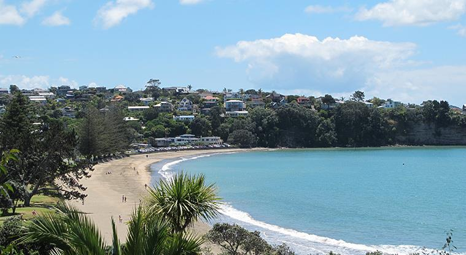
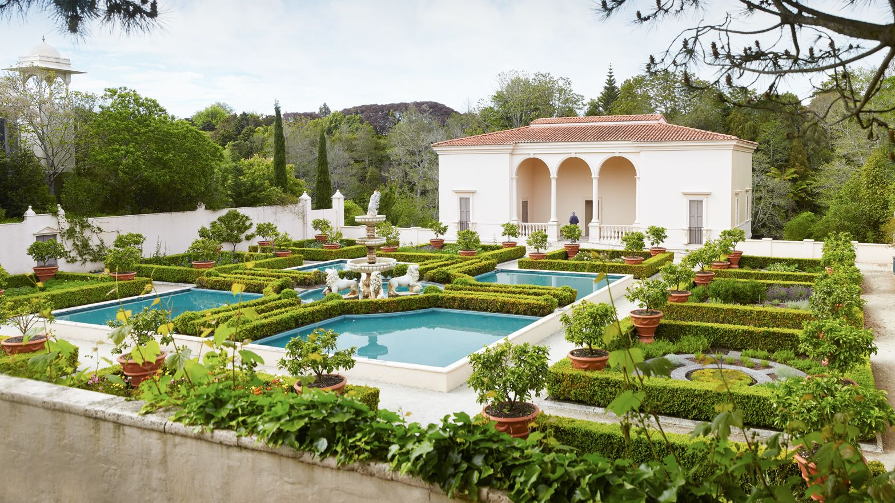
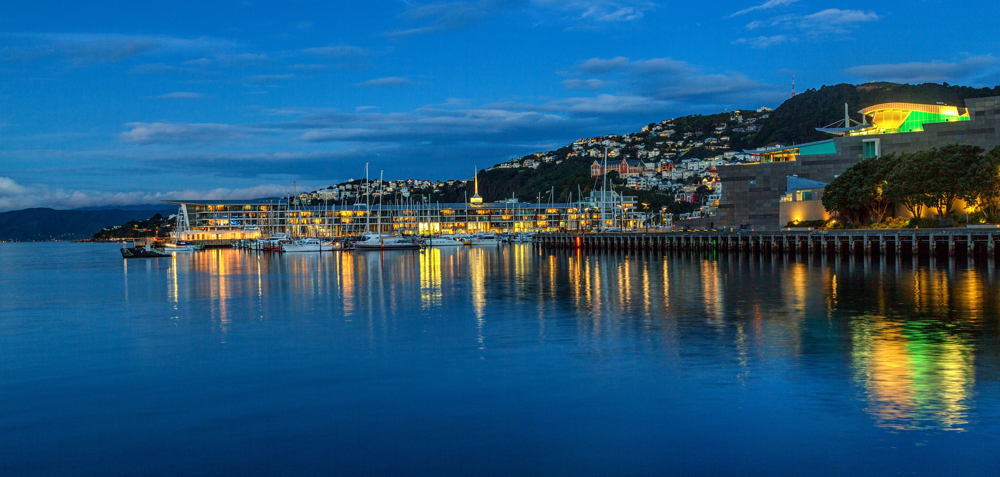
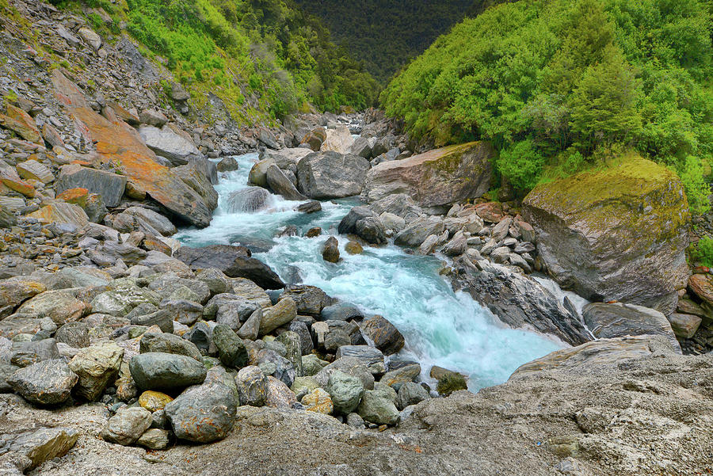
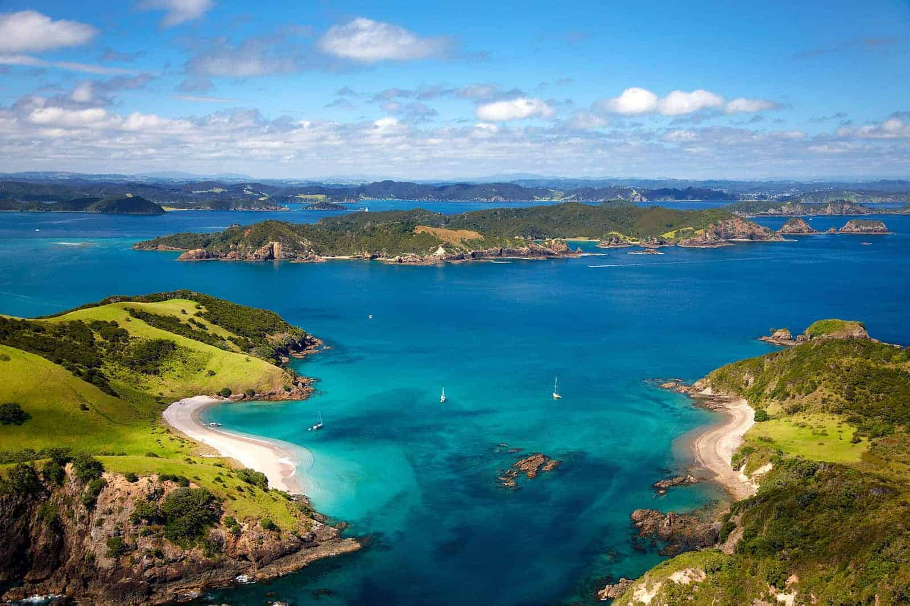
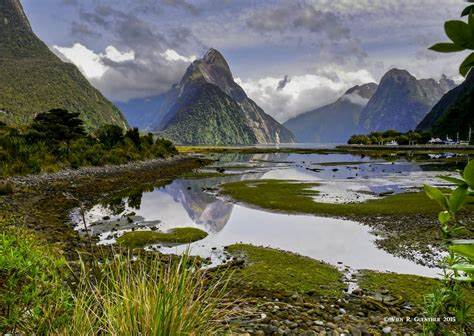

Theme
Tourism in New Zealand
Browns Bay
Browns Bay, Auckland is one of the most northernmost suburbs in the Auckland area, located in the North Shore. It lies with the East Coast Bays area, which is a string of small suburbs that form the northernmost part of the North Shore.
Hamilton Gardens
The Hamilton Gardens is one of the most visited tourist attraction in the Waikato. It's a public garden park in (as the name suggests) the south of Hamilton. It resides on the banks of the Waikato River and includes enclosed gardens, open lawns, a lake and more.
Wellington Harbour
Wellington Harbour (also known as Port Nicholson or Te Whanganui-a-Tara) is a large natural harbour on the southern tip of the North Island. It is the inlet of the Cook Strait.
Haast
Haast is a small town in the Westland district territorial authority on the West Coast of the South Island. It's famous for its dramatic landscapes, being situated on the western edge of Mount Aspiring National Park.
Bay of Islands
The Bay of Islands are a subtropical micro-region known for its stunning beauty (and history). Only a 35 minute flight from Auckland brings you here. It ecompasses 144 islands between Cape Brett and the Purerua Peninsula, including towns like Paihia, Russell and Kerikeri.
Fiordland National Park
National Park is located in the southwest of the South Island. It's known for its glacier-carved fiords of Doubtful and Milford sounds. It's a great place for nature lovers due to its spanning mountain ranges, dense forests and alpine lakes.